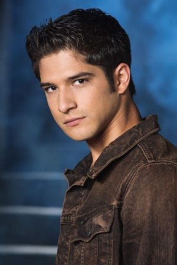
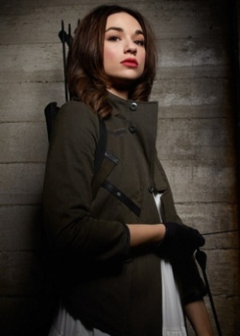
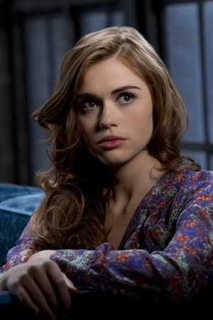
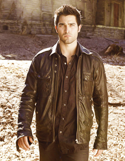
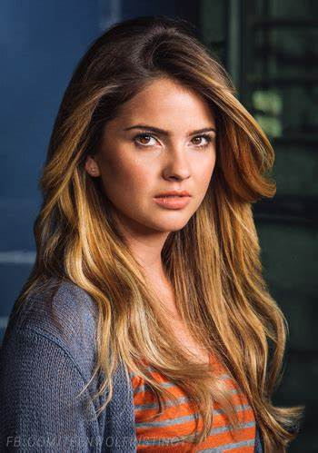
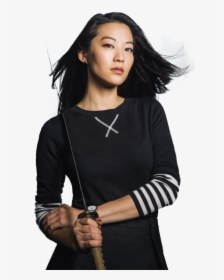
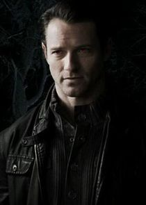
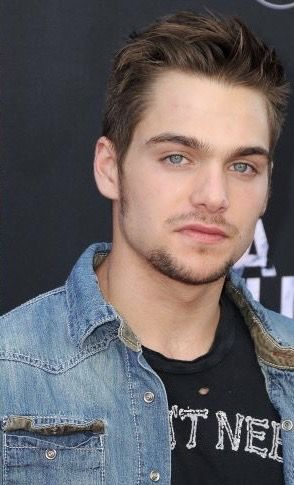

Fecha de estreno
5 de junio del 2011
País de origen
Estados Unidos, se transmitió por primera vez en MTV
Géneros
Horror, fantasia, acccion y drama
Nombre de los creadores
El creador de la serie es Jeff Davies, desarrolló la serie a partir de la película de 1985 con el mismo nombre
Breve sinopsis
"Teen Wolf" sigue la historia de Scott McCall, un adolescente común que vive en la ciudad ficticia de Beacon Hills. Su vida cambia por completo cuando es mordido por un hombre lobo y se convierte en uno. Mientras intenta equilibrar su vida como estudiante de secundaria y deportista, Scott debe lidiar con las nuevas y peligrosas habilidades que adquiere, enfrentándose a criaturas sobrenaturales y enemigos.
Lista de las temporadas y episodios
Temporada 1
- Wolf Moon
- Second Chance at First Line
- Pack Mentality
- Magic Bullet
- The Tell
- Heart Monitor
- Night School
- Lunatic
- Wolf's Bane
- Co-Captain
- Formality
- Code Breaker
Temporada 2
- Omega
- Shape Shifted
- Ice Pick
- Abomination
- Venomous
- Frenemy
- Restraint
- Raving
- Party Guessed
- Fury
- Battlefield
- Master Plan
Temporada 3
- Tattoo
- Chaos Rising
- Fireflies
- Unleashed
- Frayed
- Motel California
- Currents
- Visionary
- The Girl Who Knew Too Much
- The Overlooked
- Alpha Pact
- Lunar Ellipse
- Anchors
- More Bad Than Good
- Galvanize
- Illuminated
- Silverfinger
- Riddled
- Letharia Vulpina
- Echo House
- The Fox and the Wolf
- De-Void
- Insatiable
- The Divine Move
Temporada 4
- The Dark Moon
- 117
- Muted
- The Benefactor
- I.E.D.
- Orphaned
- Weaponized
- Time of Death
- Perishable
- Monstrous
- A Promise to the Dead
- Smoke and Mirrors
Temporada 5
- Creatures of the Night
- Parasomnia
- Dreamcatchers
- Condition Terminal
- A Novel Approach
- Required Reading
- Strange Frequencies
- Ouroboros
- Lies of Omission
- Status Asthmaticus
- The Last Chimera
- Damnatio Memoriae
- Codominance
- The Sword and the Spirit
- Amplification
- Lie Ability
- A Credible Threat
- The Maid of Gévaudan
- The Beast of Beacon Hills
- Apotheosis
Temporada 6
- Memory Lost
- Superposition
- Sundowning
- Relics
- Radio Silence
- Ghosted
- Heartless
- Blitzkrieg
- Memory Found
- Riders on the Storm
- Said the Spider to the Fly
- Raw Talent
- After Images
- Face-to-Faceless
- Pressure Test
- Triggers
- Werewolves of London
- Genotype
- Broken Glass
- The Wolves of War
Personajes principales
| Nombre | Foto | Descripción |
|---|---|---|
| Scott McCall |  | Un adolescente que se convierte en hombre lobo y debe aprender a manejar sus nuevas habilidades mientras protege a su ciudad de amenazas sobrenaturales |
| Stiles Stilinski | Mejor amigo de Scott, ingenioso e impulsivo. Aunque no tiene poderes sobrenaturales, es crucial en la resolución de misterios y enfrenta grandes peligros | |
| Allison Argent |  | Es una cazadora de criaturas sobrenaturales, proveniente de una familia con una larga tradición en la caza. A lo largo de la serie, lucha con su identidad, equilibrando su amor por Scott con su deber familiar |
| Lydia Martin |  | Es una estudiante brillante y popular que descubre que es una banshee, lo que le otorga habilidades psíquicas. A medida que avanza la serie, se convierte en una parte vital del grupo con sus intuiciones |
| Derek Hale |  | Un hombre lobo más experimentado que se convierte en mentor de Scott. Tiene un pasado oscuro y una compleja relación con su familia |
| Malia Tate |  | Es una mujer coyote que lucha con su identidad y su naturaleza instintiva. A menudo impulsiva y directa, su lealtad a sus amigos la convierte en una poderosa aliada en la lucha contra criaturas sobrenaturales |
| Kira Yukimura |  | Una kitsune (zorro sobrenatural) que se une al grupo. Tiene habilidades eléctricas y lucha por controlar sus poderes |
| Peter Hale |  | Tío de Derek, un hombre lobo astuto y a menudo antagonista con intenciones egoístas, pero con un fuerte vínculo familiar |
| Liam Dunbar |  | Un joven estudiante y atleta que es mordido por Scott y se convierte en su primer beta. Lucha con problemas de control debido a su temperamento impulsivo, pero se convierte en un miembro leal del grupo |
Enlaces
InstagramWiki Fandom
Prime Video (donde ver la serie)